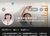

汇报人：融媒中心 陈洁颖
2026年7月 · 运营IP 8个 · 服务科室 5个
| 医生 | 科室 | 视频数 | 播放量 | 涨粉 | 内容定位 |
|---|---|---|---|---|---|
|
 林秀雯 |
儿科 | 112 | 3,778万 | 29,239 | 矮小症、性早熟、儿童保健 |
|
梅晓峰 |
耳鼻喉科 | 117 | 1,341万 | 22,093 | 梅尼埃、耳石症、人工耳蜗 |
|
刘玲 |
儿科 | 169 | 1,340万 | 8,258 | 矮小症、性早熟、儿童保健 |
|
莫文辉 |
儿科 | 105 | 461万 | 2,422 | 牛奶蛋白过敏和食物过敏宝宝的综合管理 |
|
覃烨 |
妇科 | 117 | 217万 | 735 | 宫腔镜手术、腹腔镜手术、盆底肌治疗 |
|
邬素珍 |
中医妇科 | 98 | 48万 | 938 | 备孕、不孕不育 |
|
刘凤岩 |
激光美容科 | 24 | 46万 | 601 | 光电、微整注射 |
|
丁德权 |
中医康复科 | 153 | 720万 | 1.3万 | 颈椎病、肩周炎、腰椎间盘突出 |
| 合计 | 8个IP | 895 | 7,951万 | 77,574 |
| 科室 | IP数 | 视频数 | 播放量 | 涨粉 | 说明 |
|---|---|---|---|---|---|
| 儿科 | 3 | 386 | 5,579万 | 39,919 | 林秀雯 + 刘玲 + 莫文辉 |
| 耳鼻喉科 | 1 | 117 | 1,341万 | 22,093 | 梅晓峰 |
| 中医科 | 2 | 251 | 768万 | 14,226 | 邬素珍（中医妇科）+ 丁德权（中医康复科） |
| 妇科 | 1 | 117 | 217万 | 735 | 覃烨 |
| 激光美容科 | 1 | 24 | 46万 | 601 | 刘凤岩（新启动） |
| 合计 | 8 | 742 | 7,231万 | 64,286 |
| 医生 | 2025H2 看过占比 |
2026H1 看过占比 |
看过 变化 |
2025H2 网络来源 |
2026H1 网络来源 |
网络 变化 |
|---|---|---|---|---|---|---|
| 丁德权 | 80.0% | 82.0% | ↑ +2.0% | 72.0% | 72.0% | →持平 |
| 林秀雯 | 68.6% | 76.9% | ↑ +8.3% | 35.3% | 46.2% | ↑ +10.9% |
| 莫文辉 | 56.0% | 48.1% | ↓ -7.9% | 14.0% | 23.1% | ↑ +9.1% |
| 梅晓峰 | 46.8% | 51.9% | ↑ +5.1% | 12.8% | 18.5% | ↑ +5.7% |
| 刘玲 | — | 53.8% | 新增 | — | 23.1% | 新增 |
| 覃烨 | 36.4% | 43.1% | ↑ +6.7% | 18.2% | 19.6% | ↑ +1.4% |
| 邬素珍 | 33.9% | 28.6% | ↓ -5.3% | 5.4% | 8.2% | ↑ +2.8% |
| 可比均值 | 53.6% | 55.1% | ↑ +1.5% | 26.3% | 31.3% | ↑ +5.0% |